library(dslabs)
data(polls_2008)
polls_2008 <- as.data.frame(polls_2008)
plot(x=polls_2008$day, y=polls_2008$margin,pch=16,xlab='Day',ylab='Margin')
In this lecture we’ll introduce some new techniques to produce smooth estimates of trends and density functions, and then consider how to deal with data that change over time.
The data below are from the 2008 US Presidential election and show the polling lead of Barack Obama over John McCain.
library(dslabs)
data(polls_2008)
polls_2008 <- as.data.frame(polls_2008)
plot(x=polls_2008$day, y=polls_2008$margin,pch=16,xlab='Day',ylab='Margin')
There is definitely a pattern here, but it is obscured in a lot of noise. The pattern is clearly more complicated than a straight line, so how can we represent this?
A flexible approach would be to take a moving average of the data. If we assume that for any \(x\), the trend — ie \(\mathbb{E}[Y]\) — is a constant in the vicinity of \(x\). We can estimate this value by the smoothed trend at any point \(x_0\) as the sample mean of the data points close to \(x_0\). As the values of \(x_0\) changes, the nearby data points change, and so the smoothed trend will adapt to the shape of the data. This will obviously be more flexible than the linear regression, but a lot will depend on our definition of “close to \(x_0\)”.
The simple (central) moving average of our data \((x_1,Y_1), \dots,(x_n,Y_n)\) at a new location \(x_0\) is defined as \[\hat{f}(x_0)=\frac{1}{N(x_0)}\sum_{x_i\in\mathcal{N}(x_0)} Y_i\] where \(\mathcal{N}(x_0)\) is the set of all data points in the neighbourhood of \(x_0\), and \(N(x_0)=\#\mathcal{N}(x_0)\).
The neighbourhood of \(x_0\) is defined as \[\mathcal{N}(x_0)=\left\{x_i: |x_i-x_0|<h\right\}\] and \(h\) is the bandwidth parameter.
To perform a moving average smooth in R, we can use the ksmooth function, specifying the bandwidth parameter as \(h\) above. The result is a list with x and y components that give the smoothed values, which can then be used to draw the smoothed curve with the lines function.
Using \(h=3.5\) (so we average over 1 week of data at a time) we obtain:
fit <- ksmooth(polls_2008$day, polls_2008$margin, kernel = "box", bandwidth = 7)
plot(x=polls_2008$day, y=polls_2008$margin,pch=16,xlab='Day',ylab='Margin')
lines(x=fit$x, y=fit$y,col=2,lwd=4)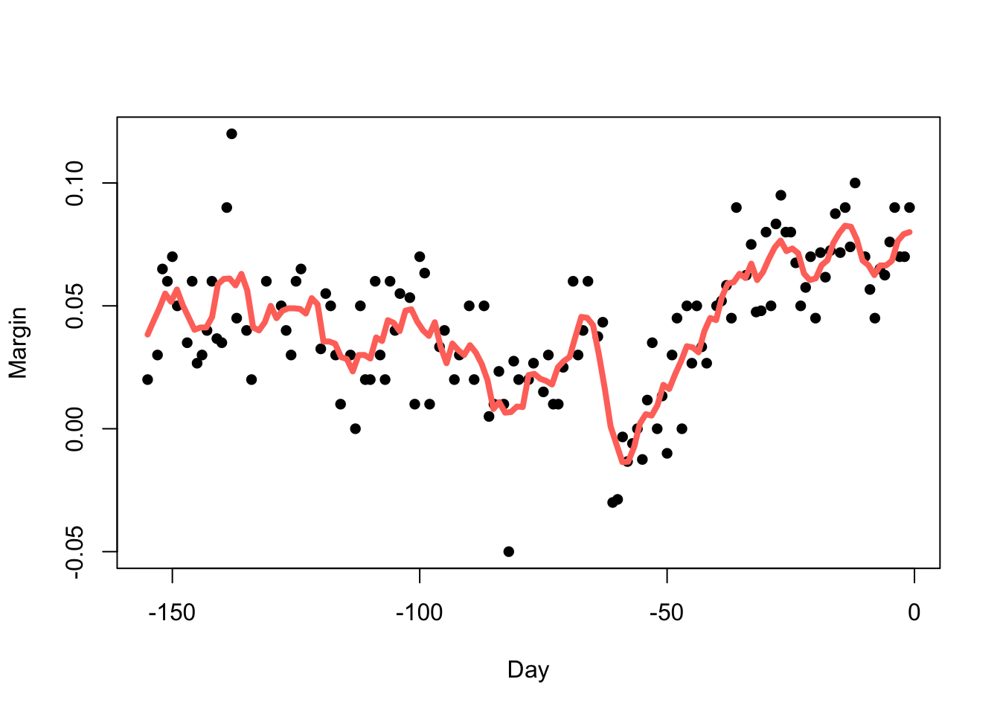
Reducing the bandwidth (\(h=3.5\)) reduces the smoothness:
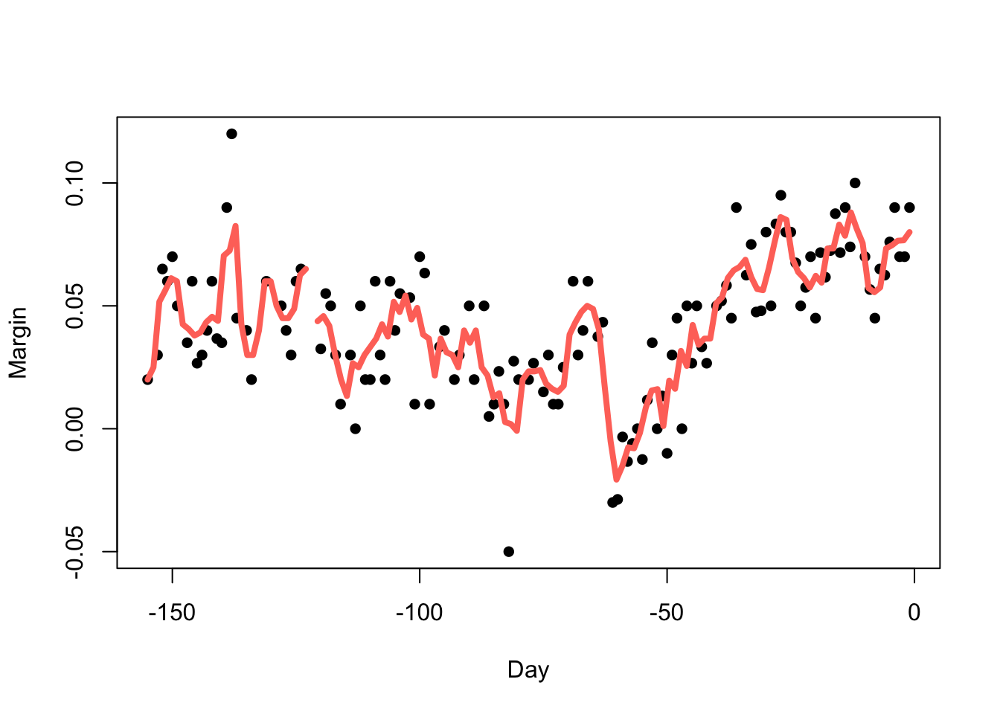
Increasing the bandwidth (\(h=14\)) increases the smoothness:
fit <- ksmooth(polls_2008$day, polls_2008$margin, kernel = "box", bandwidth = 14)
plot(x=polls_2008$day, y=polls_2008$margin,pch=16,xlab='Day',ylab='Margin')
lines(x=fit$x, y=fit$y,col=2,lwd=4)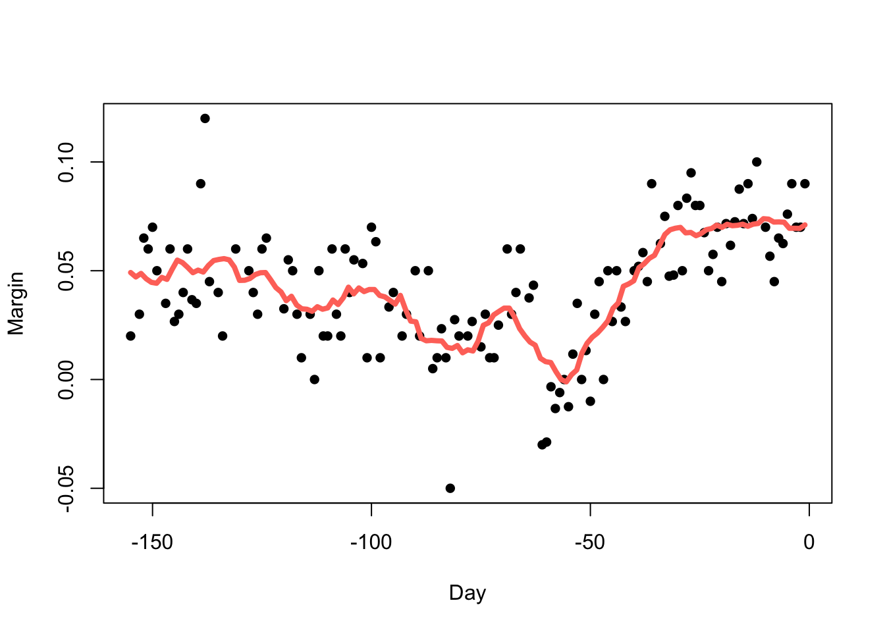
But we must be careful not to go too far (\(h=70\)):
fit <- ksmooth(polls_2008$day, polls_2008$margin, kernel = "box", bandwidth = 70)
plot(x=polls_2008$day, y=polls_2008$margin,pch=16,xlab='Day',ylab='Margin')
lines(x=fit$x, y=fit$y,col=2,lwd=4)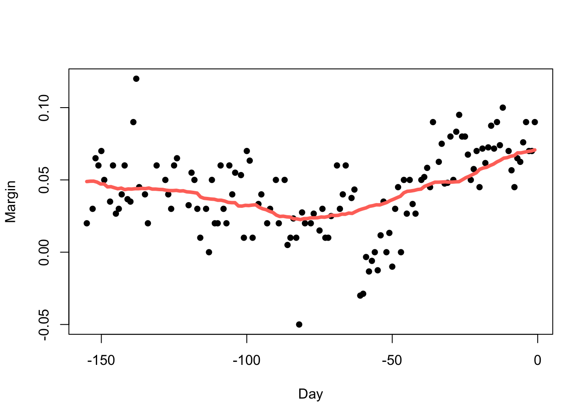
The downside of the flexibility of the moving average models is that they can be quite volatile. As we move along the \(x\) axis, the data set will change - with points appearing and disappearing according to our neighbourhood rule.
We can think of the moving average as computing the following weighted average: \[\hat{f}(x_0) = \sum_{i=1}^n w_i(x_0) Y_i\] with each point receiving a weight \(w_i(x_0)\) of either \(0\) or \(1/N_0\) depending on whether we’re in the neighbourhood or not.
A smoother way to do this is to use a continuous weight function, to give nearer points more influence and distant points less influence.
The kernel smoother of our data \((x_1,Y_1), \dots,(x_n,Y_n)\) at a new location \(x_0\) is defined as: \[\hat{f}(x_0)= \sum_{i=1}^n w_i(x_0) Y_i\] where \(w_i(x_0)\) is the weight of each data point \(x_i\) on the point of interest \(x_0\) and \(\sum\nolimits_{i=1}^n w_i=1\).
The weights are defined in terms of a kernel function \(K\) which controls its shape and behaviour such that \[w_i(x;h)=\frac{K\left(\frac{x-x_i}{h}\right)}{\sum\nolimits_{i=1}^nK\left(\frac{x-x_i}{h}\right)}\].
For our purposes, the kernel function is non-negative real-valued integrable function \(K\). Typically, we also require
Some examples of kernel functions:
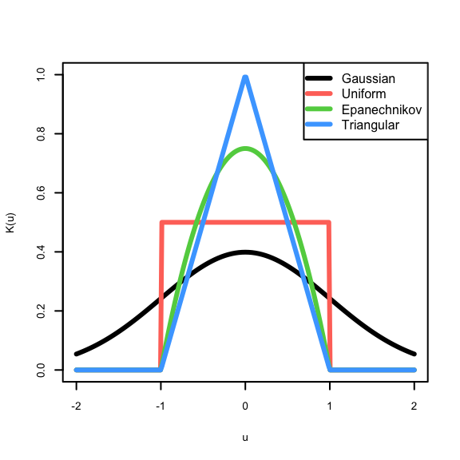
We can again perform kernel smoothing using the ksmooth function, but by specifying the kernel argument we can choose the kernel function. Only the Uniform (kernel="box") and Gaussian (kernel="normal") options are supported.
fitN <- ksmooth(polls_2008$day, polls_2008$margin, kernel = "normal", bandwidth = 7)
plot(x=polls_2008$day, y=polls_2008$margin,pch=16,xlab='Day',ylab='Margin')
lines(x=fitN$x, y=fitN$y,col=4,lwd=4)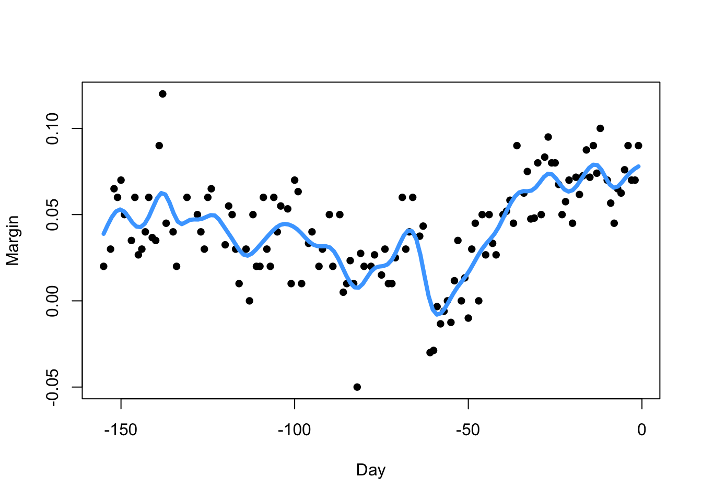
Our kernel smoother estimate will inherit the smoothness properties of the kernel.
For well-behaved data, the choice of the kernel has little practical impact, at least compared with the choice of the bandwidth.
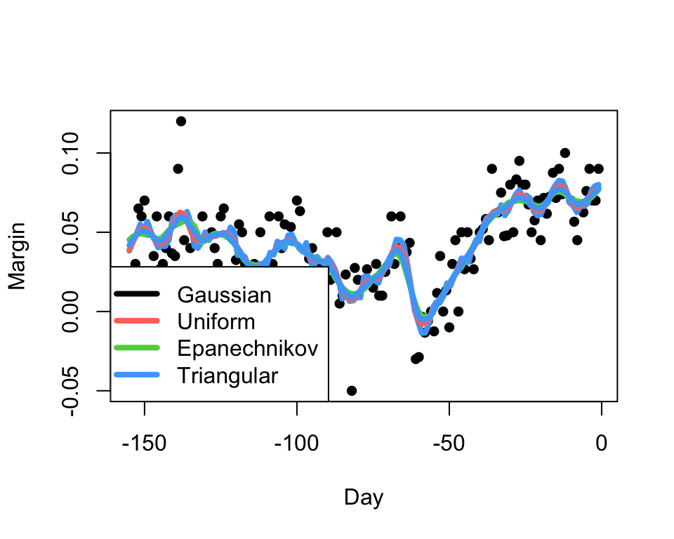
To obtain the local linear fit, we use a weighted approach. Instead of using least squares, we minimise a weighted version instead: \[\sum_{i=1}^N w_0(x_i) \left[Y_i-\{\beta_0+\beta_1x_i\}\right]^2.\]
The standard kernel used to produce the weights is the Tukey tri-weight \[K(u)=\begin{cases} \left(1-|u|^3\right)^3 & |u|\leq 1\\ 0&|u|>1\end{cases}\] This combination of methods is known as loess or lowess.
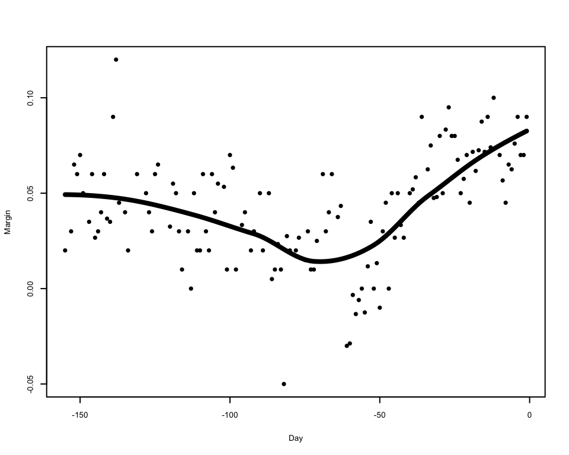
First, define the fixed intervals (or bins) of the histogram by the intervals \(\mathcal{B}_k=[a_k,a_{k+1})\), where \(a_{k+1}=a_k+h\) for a bin-width (or bandwidth) \(h>0\).
The density of \(X\) in bin \(k\) can be expressed as \[f(x_0)=\lim_{h\rightarrow 0+} \frac{\mathbb{P}[a_k<X<a_{k}+h]}{h}.\]
An unbiased estimate of a probability is a sample proportion, so if we define the number of points in bin \(\mathcal{B}_k\) as \(n_k=\#\{X_i:X\in[a_k,a_{k+1})\}\) then our histogram estimate of the density above can be written as \[\hat{f}_\text{hist}(x_0)=\frac{1}{h}\hat{\mathbb{P}}[a_k<X<a_{k}+h]=\frac{1}{h}\frac{n_k}{n}\]
With a bit more theory (and glossing over some details), we can show that for an \(x\in\mathcal{B}_k\):
We have another bias-variance tradeoff, and another problem very sensitive to the choice of bandwidth!
library(MASS)
Attaching package: 'MASS'The following object is masked from 'package:dplyr':
selectdata(galaxies)
galaxies <- galaxies/1000Plotted below are four histograms of the velocities in km/sec of 82 galaxies from 6 well-separated conic sections of an unfilled survey of the Corona Borealis region. The sensitivity of the histogram estimate of the density to the bin-width is clear, with the top-left plot showing a lot of structure but also a lot of noise. The bottom-right plot is clearly over-smoothed, with many of the data features obscured resulting in a high bias.
hist(galaxies,breaks=seq(9,35,by=0.5),xlab='Velocity',freq=FALSE,main='h=0.5',col=2)
rug(galaxies)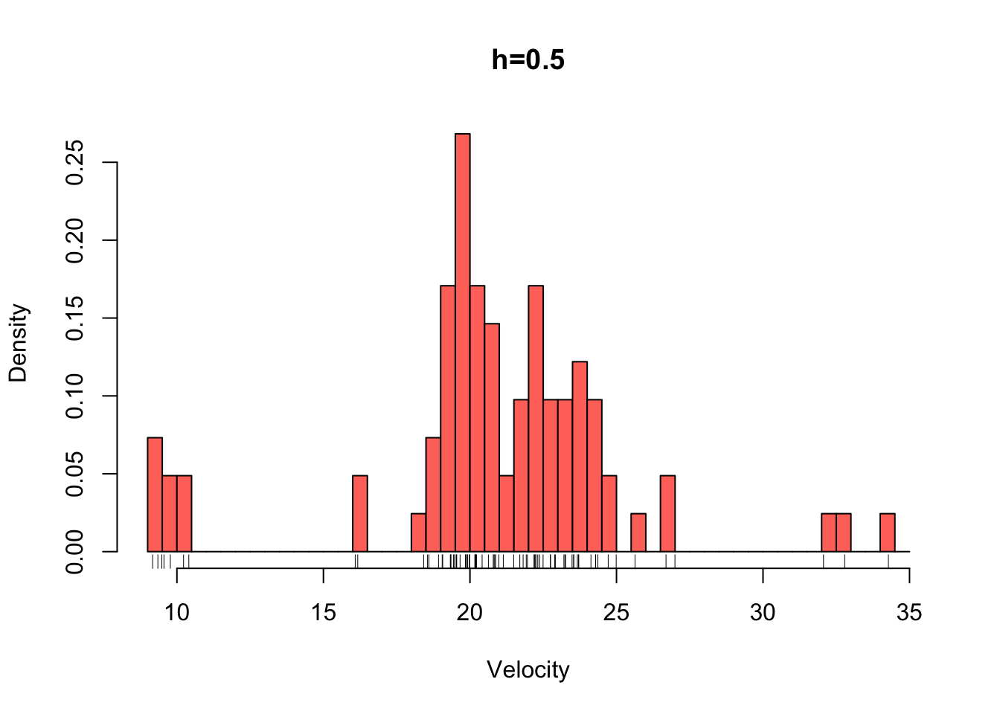
hist(galaxies,breaks=seq(9,35,by=2),xlab='Velocity',freq=FALSE,main='h=2',col=2)
rug(galaxies)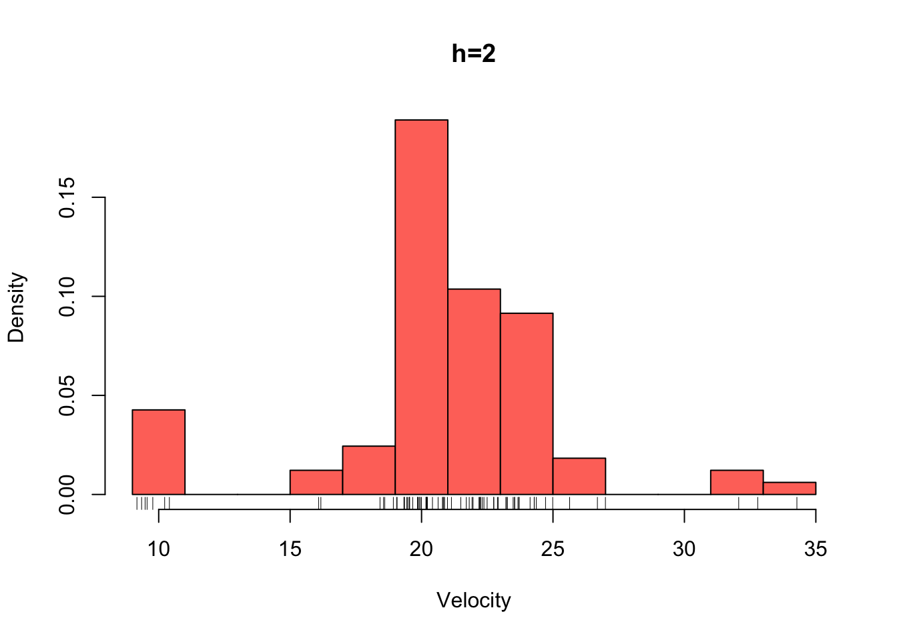
hist(galaxies,breaks=seq(9,39,by=5),xlab='Velocity',freq=FALSE,main='h=5',col=2)
rug(galaxies)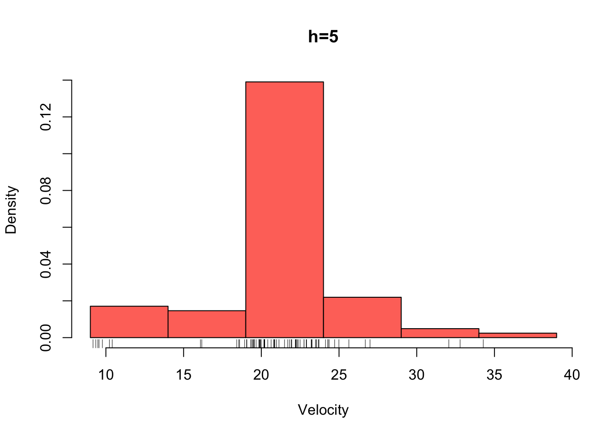
hist(galaxies,breaks=seq(9,39,by=10),,xlab='Velocity',freq=FALSE,main='h=10',col=2)
rug(galaxies)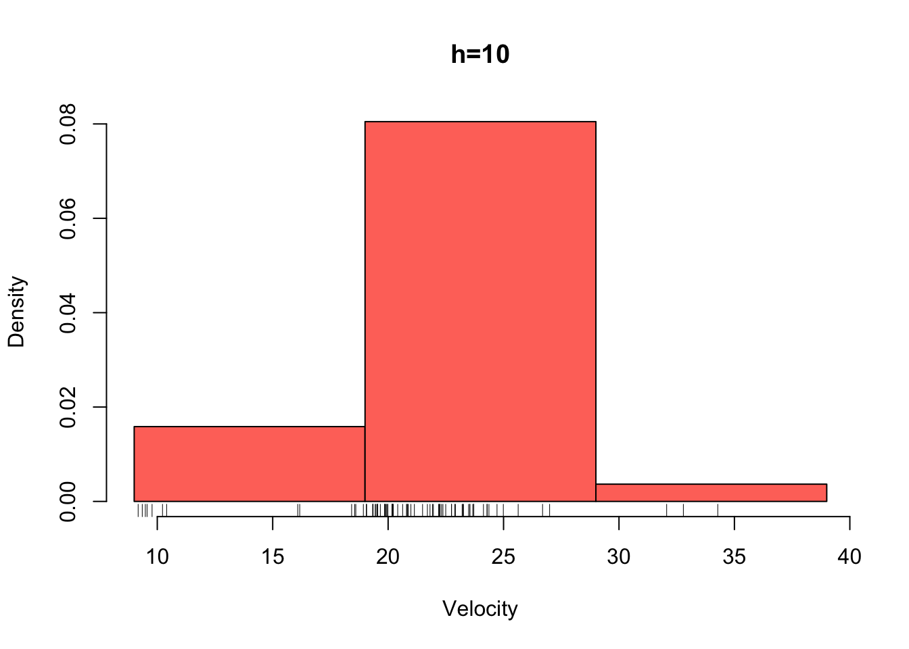
Like the simple moving average, the histogram suffers a lot of similar issues as an estimate for a density function:
The kernel density estimate of a probability density function \(f(x)\) from data \(X_1,\dots,X_n\) is defined as \[\hat{f}_K(x;h)=\frac{1}{nh}\sum_{i=1}^n K\left(\frac{x-X_i}{h}\right),\] where \(h\) is the bandwidth, and \(K(\cdot)\) is a kernel function.
The histogram estimator for bin \(k\) can be expressed in this form: \(\hat{f}_\text{hist}(x;h)=\frac{1}{nh}\sum_{i=1}^n \mathbf{I}\{X_i\in\mathcal{B}_k\}\)
The plot below illustrates the kernel density estimate. We begin with data points (left), each data point then makes a contribution to the density function estimate according to the kernel function (middle), the contributions are then averaged and we obtain the smooth density estimate (right).
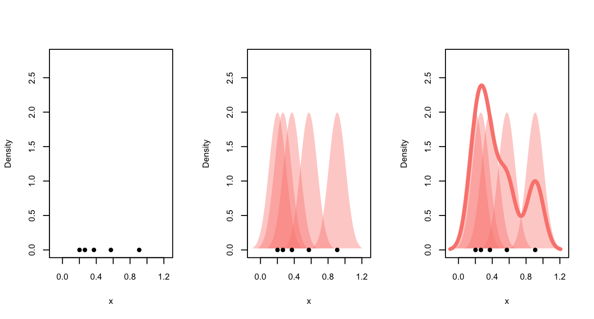
As the bandwidth affects the kernel width and hence the distance over which each data point influences the density estimate, the effect of bandwidth on the shape of the final KDE is quite strong:
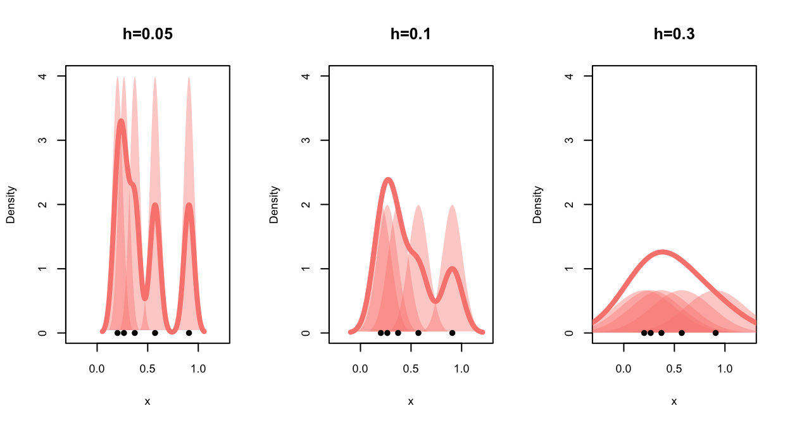
For density estimates, the shape of the kernel has a much stronger impact on the smoothness of the estimated density:
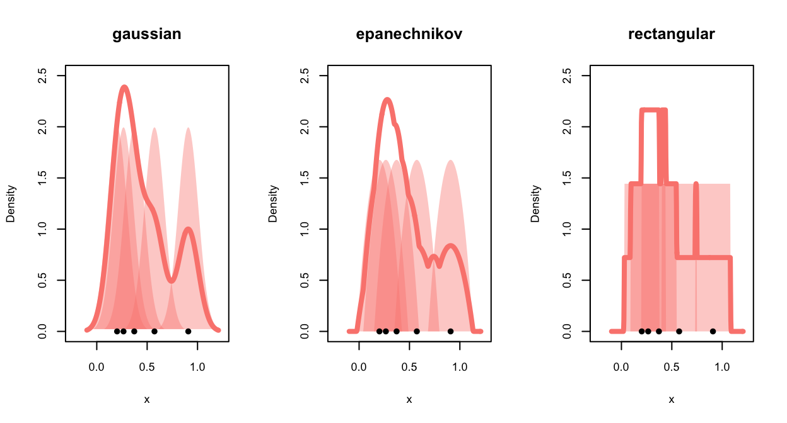
We can (but we won’t) derive the theoretical properties of the KDE and find very similar results to those seen earlier:
The problem of identifying the ‘best’ \(h\) is called bandwidth selection and is a substantial area in itself.
The density function can perform kernel density estimation and is used in a similar way to ksmooth:
d <- density(galaxies, bw=0.25)Again, the result is a list with x and y components that give the smoothed densities, which can then be used to draw the smoothed curve with the lines function. If the bandwidth (bw) is not specified, R will try and estimate it.
plot(x=range(galaxies),y=c(0,0.25),ty='n',ylab='Density',xlab='Velocity')
rug(galaxies)
d <- density(galaxies,bw=0.25)
lines(x=d$x,y=d$y, lwd=3,col=2)
d <- density(galaxies,bw=0.5)
lines(x=d$x,y=d$y, lwd=3,col=3)
d <- density(galaxies,bw=1)
lines(x=d$x,y=d$y, lwd=3,col=4)
d <- density(galaxies,bw=3)
lines(x=d$x,y=d$y, lwd=3,col=5)
legend(x='topright',legend=paste0('h=',c(0.25,0.5,1,3)),
lwd=3,col=2:5,pch=NA)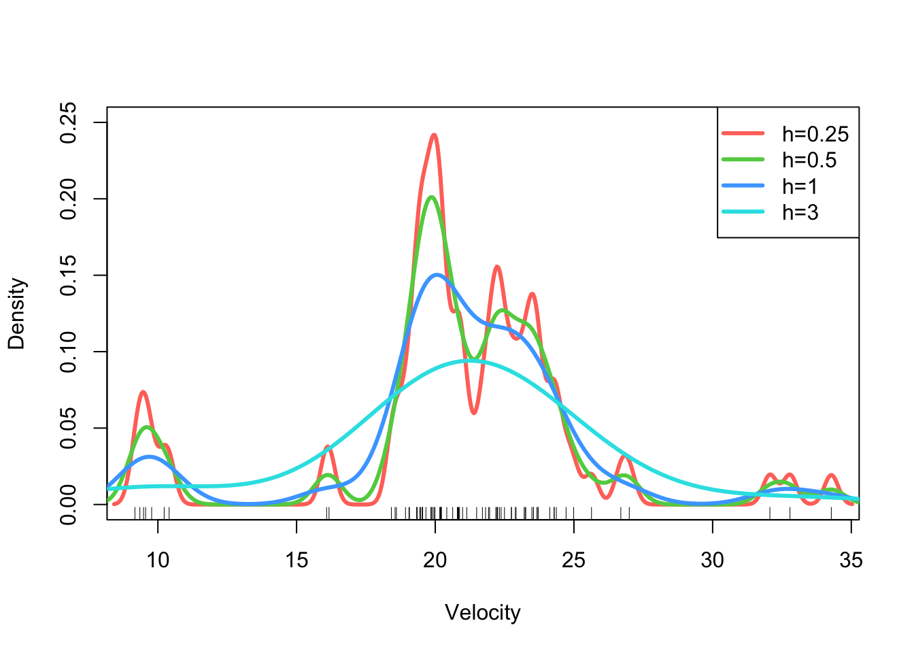
We’ve seen how we can use density estimation to produce a “smooth” histogram for a variable. We can also combine this idea with a boxplot, to produce a violin plot:
library(ggplot2)
ggplot(data.frame(galaxies), aes(x=1,y = galaxies)) + geom_violin(fill = "lightBlue", color = "#473e2c") 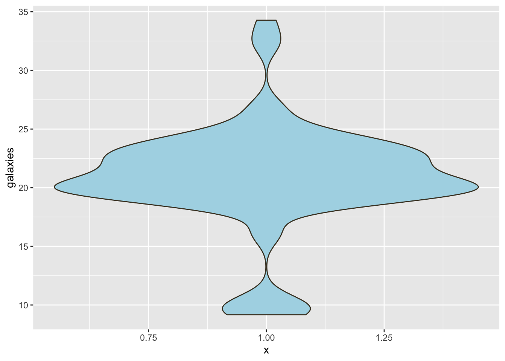
The syntax is rather complicated here, as we’re relying on the ggplot package. GGPlot has a somewhat different syntax than standard R (which is why we didn’t focus on it), but it can be very effective and versatile. Once you get the hang of it!
The violin plot functions something like a combination of box plot and histogram. We get the same sort of information on the shape of the distribution that we do with the smoothed histogram, but the simplicity and handling of outliers from box plots is lost.
Nevertheless, the violin plot is most effective when comparing distributions across multiple sub-groups of the data.
library(ggplot2)
data(chickwts)
ggplot(chickwts, aes(x = factor(feed), y = weight)) +
geom_violin(fill = "lightBlue", adjust=0.5) +
labs(x = "Feed Supplement", y = "Chick Weight (g)") 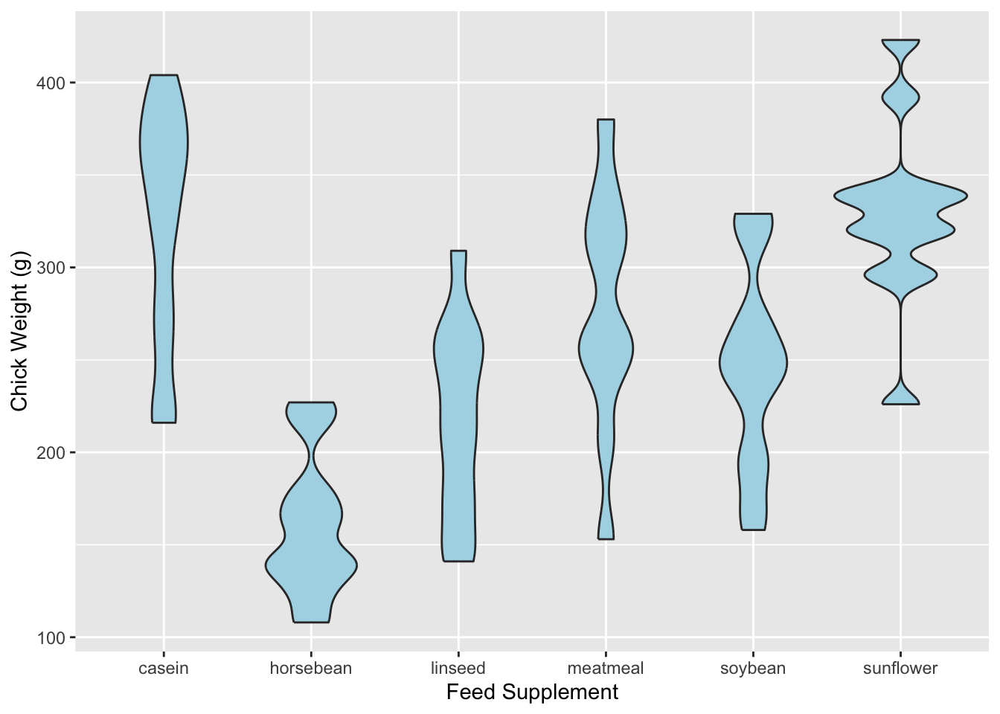
In comparison to the boxplots, we get a lot more information on the shape of the distributions.
library(ggplot2)
data(chickwts)
ggplot(chickwts,
aes(x = factor(feed), y = weight)) +
geom_violin(fill = "lightBlue", adjust=0.5) +
geom_boxplot(width=0.2) +
labs(x = "Feed Supplement", y = "Chick Weight (g)") 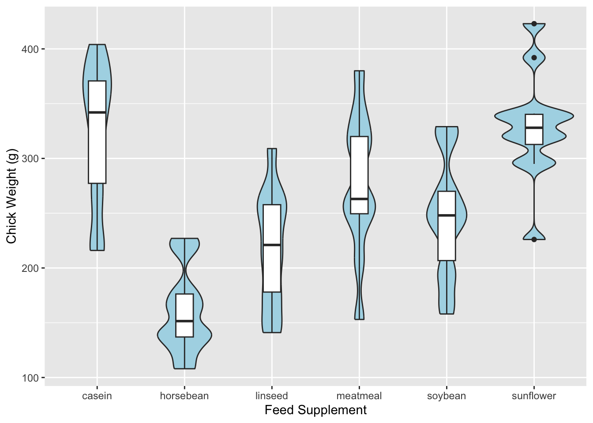
The ridgeline plot is used in similar circumstances, but shows the densities horizontally in a series of ridges.
library(ggridges)
ggplot(chickwts, aes(weight, y=factor(feed), fill=feed)) +
geom_density_ridges(scale = 1.5)Picking joint bandwidth of 24.4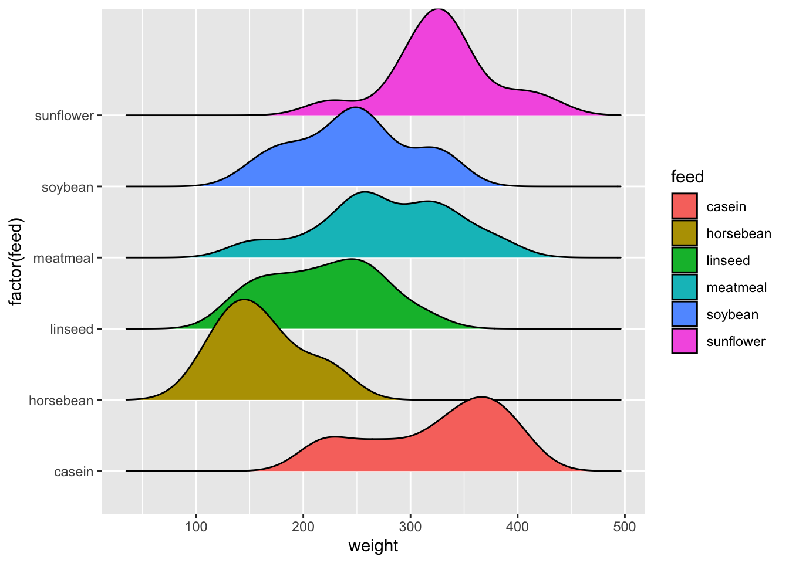
The ideas of density estimation can be extended beyond one dimension. If we consider two variables at once, then we can estimate their 2-D joint distribution as a smoothed version of a scatterplot. This also provides another alternative method of dealing with overplotting of dense data sets.
We can fit the 2-D density using the kde2d function from the MASS package. Let’s apply this to the Old Faithful data set:
library(MASS)
k1 <- kde2d(geyser$duration, geyser$waiting, n=100)Note that we need both an x and a y variable now, as we’re working in 2-dimension. We can set a bandwidth by supplying an h parameter, but this is now a vector specifying a bandwidth for the x and y directions separately.
The output of kde2d is a list with x, y, and z components. The x and y are the values of the specified variables used to create a grid of points. The density value at every combination of x and y is then estimated and returned in the z component. The value of n here indicates the number of grid points along each axis.
Having estimated the 2-D density, we’ll need some new functions to visualise it. A contour plot is one option:
contour(k1, col='blue')
Though without the data, this is a bit hard to understand. So let’s overlay the contours on a scatterplot:
plot(x=geyser$duration, y=geyser$waiting, pch=16, xlab='duration', ylab='waiting')
contour(k1, col='blue', add=TRUE)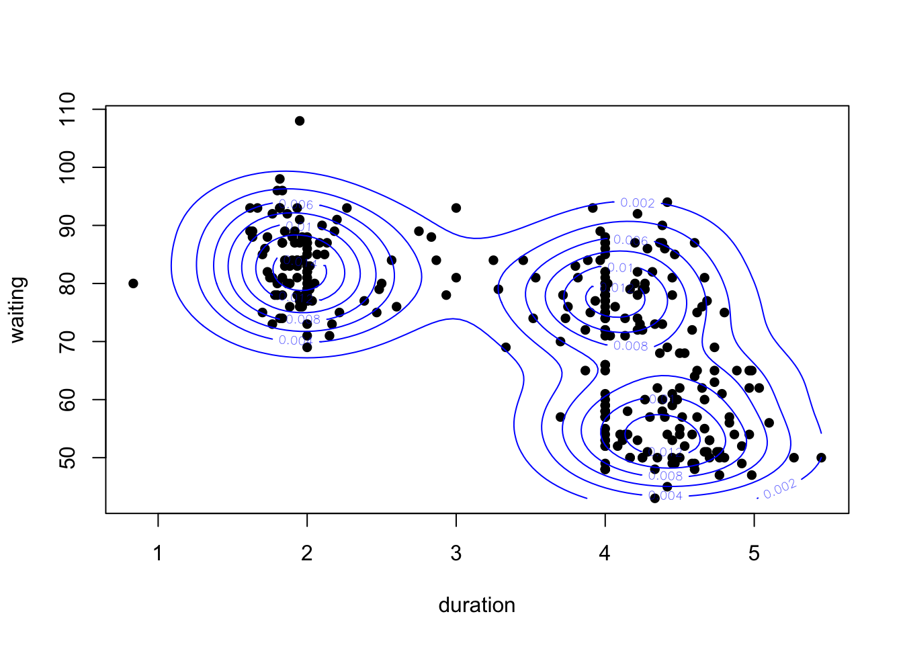
Our 2-D density function for these data appears to detect three separate modes - one for the short duration eruptions, and two groups for the longer durations.
We could also generate a heat map of the density values
image(k1)
Notice the pixelated quality of the plot. This is down to the choice of n when calling kde2d. If n is too small, we don’t produce enough predictions to generate a cleaner plot, so if we increase n this should improve. Note that this is not the same as the smoothing performed by KDE which is controlled by the bandwidth parameter h - this is purely a visual thing.
Let’s boost the value of n and overlay the points on the plot.
image(kde2d(geyser$duration, geyser$waiting, n = 500), xlab='duration', ylab='waiting')
points(x=geyser$duration, y=geyser$waiting, pch=16)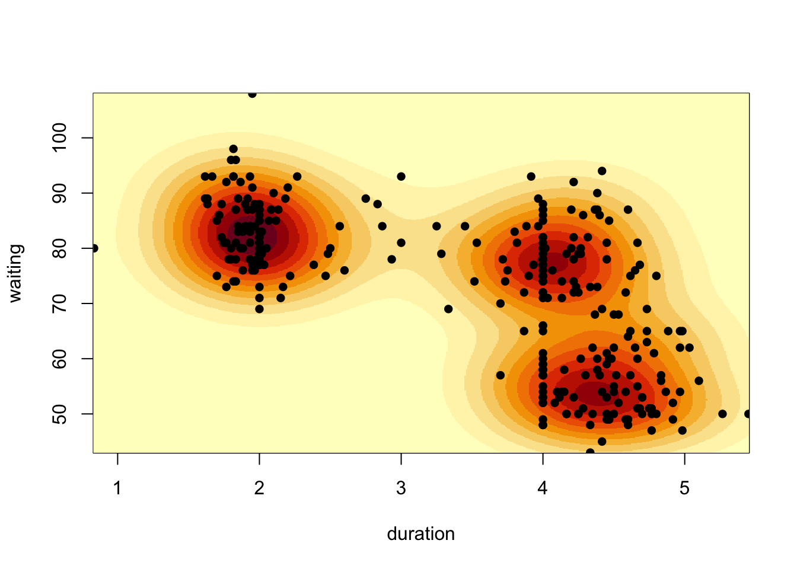
When we have extremely large numbers of points (e.g. millions), drawing a scatterplot can be a slow process as each point has to be drawn individually and inevitably a large amount of over-plotting occurs. In such cases, it is often better to skip the scatterplot and look at heatmaps or contour plots of the data instead
Comments on Loess
To apply local regression by LOESS, we can use the
loessfunction, which works much like thelmfunction does for standard regression. First we fit the model usingloess:We can then use the
predictfunctions to predict values of the smoothed trend:The predictions can then be used to draw the smoothed trend on the plot
Adjusting the
spanargument has a similar effect to adjusting the bandwidth of the kernel smoother on the smoothness of the resulting trend: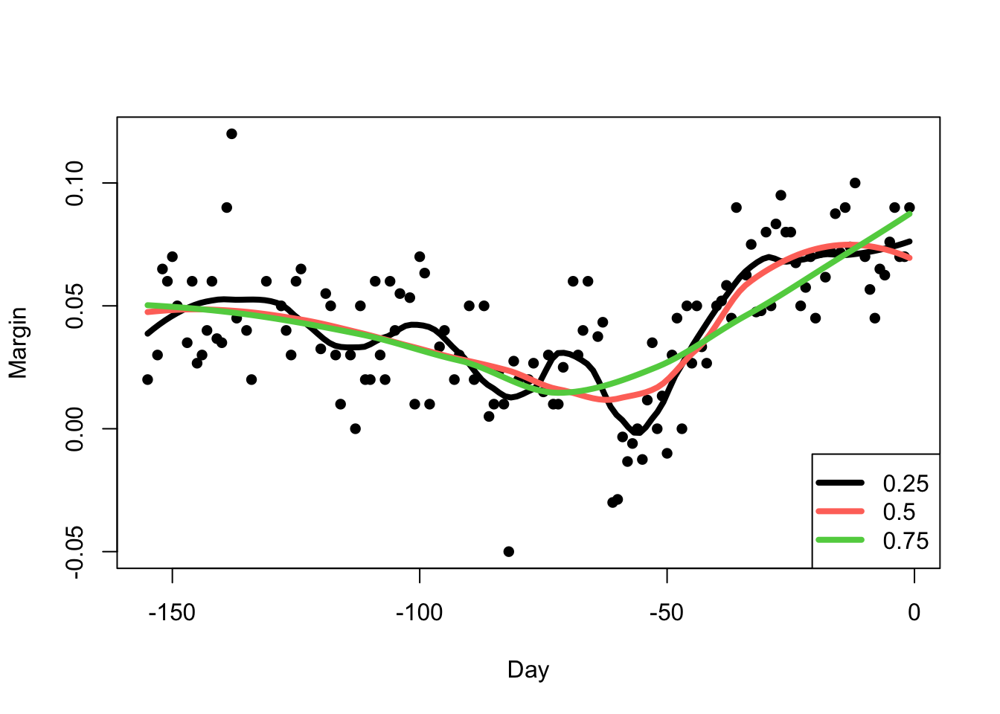
As LOESS just uses linear regressions to generate its smoothed trend, we can apply linear regression theory to obtain the standard errors of the trend and form confidence intervals around it.
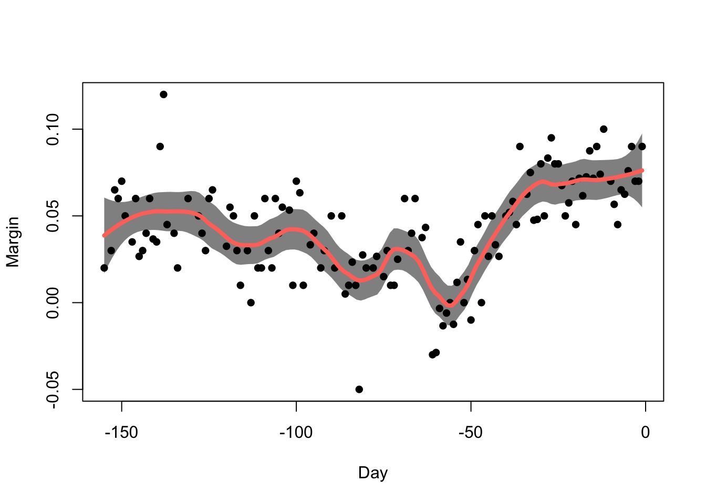